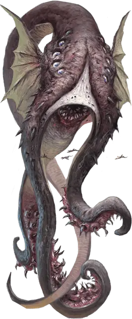

Космический ужас
Cosmic Horror
Громадная Аберрация, обычно нейтрально-злая

Класс Доспеха 15 (природный доспех)
Хиты 280 (16к20 + 112)
Скорость 50 футов, летая 100 футов
| мод | спас | ||
|---|---|---|---|
| СИЛ | 27 | +8 | +8 |
| ЛОВ | 10 | +0 | +0 |
| ТЕЛ | 25 | +7 | +7 |
| мод | спас | ||
|---|---|---|---|
| ИНТ | 24 | +7 | +13 |
| МДР | 15 | +2 | +8 |
| ХАР | 24 | +7 | +13 |
Иммунитет к урону кислота, яд
Иммунитет к состояниям испуг, отравление, очарование
Чувства тёмное зрение 240 футов, пассивное Восприятие 12
Языки Глубинная речь, Телепатия 240 фт.
Опасность 18 (20000 опыта)
Бонус мастерства +6
Особенности
Легендарное сопротивление (3/день). Если ужас проваливает спасбросок, он может вместо этого сделать спасбросок успешным.
Действия
Мультиатака. Ужас совершает атаку Укусом и две атаки Щупальцем.
Укус. Рукопашная атака оружием: +14 к попаданию, досягаемость 10 футов, одна цель. Попадание: 22 (4к6 + 8) колющего урона.
Щупальце. Рукопашная атака оружием: +14 к попаданию, досягаемость 30 футов, одна цель. Попадание: 18 (3к6 + 8) урона силовым полем, и цель становится схваченной (Сл высвобождения 18). Пока цель схвачена, она опутана. Ужас обладает 1к8 + 1 щупальцами, и каждое может держать в захвате одну цель.
Психические шёпоты (перезарядка 5-6). Ужас исторгает жуткий шепот в радиусе 60 футов от себя. Все не являющиеся Аберрациями существа, находящиеся в радиусе этой сферы, должны преуспеть в спасброске Мудрости Сл 21, получая 33 (6к10) урона психической энергией при провале или половину этого урона при успехе.
Легендарные действия
Ужас может совершить 3 легендарных действия, выбирая из представленных ниже вариантов. За один раз можно использовать только одно легендарное действие, и только в конце хода другого существа. Ужас восстанавливает использованные легендарные действия в начале своего хода.
Сжимание щупальцем. Ужас сжимает одно из существ, которое он схватил. Схваченное существо должно преуспеть в спасброске Телосложения Сл 22, получая 18 (3к6 + 8) урона силовым полем при провале или половину этого урона при успехе.
Струя яда (стоит 2 действия). Ужас испускает струю омерзительного газа 30-футовой линией шириной 5 футов. Все существа в этой линии должны преуспеть в спасброске Телосложения Сл 21, иначе получая 14 (4к6) урона ядом.
Телепортация (стоит 2 действия). Ужас телепортируется вместе со всеми существами, которыми он держит в захвате, на расстояние до 120 футов в свободное пространство, которое он видит.
Описание
Космические ужасы — это колоссальные злобные сущности, которые время от времени вырываются из оков Дальнего Предела и оказываются на Астральном Плане. Привлеченные светом далеких звезд, они вторгаются в системы Дикого космоса и опустошают миры. Насытившись умами и телами обитателей мира, космические ужасы обычно возвращаются в пустоту, где погружаются в глубокий сон и бесцельно дрейфуют, пока голод или что-либо другое не пробудит их.
Космические ужасы являются одними из самых могущественных существ, порожденных Дальним Пределом. Ни один из них не похож на другого, но у них есть общие черты. Каждый из них достигает примерно 100 футов в длину или высоту, а физическая форма существа на первый взгляд похожа на невозможное смешение глаз, ртов, крыльев, щупалец, а также менее узнаваемых органов и придатков.